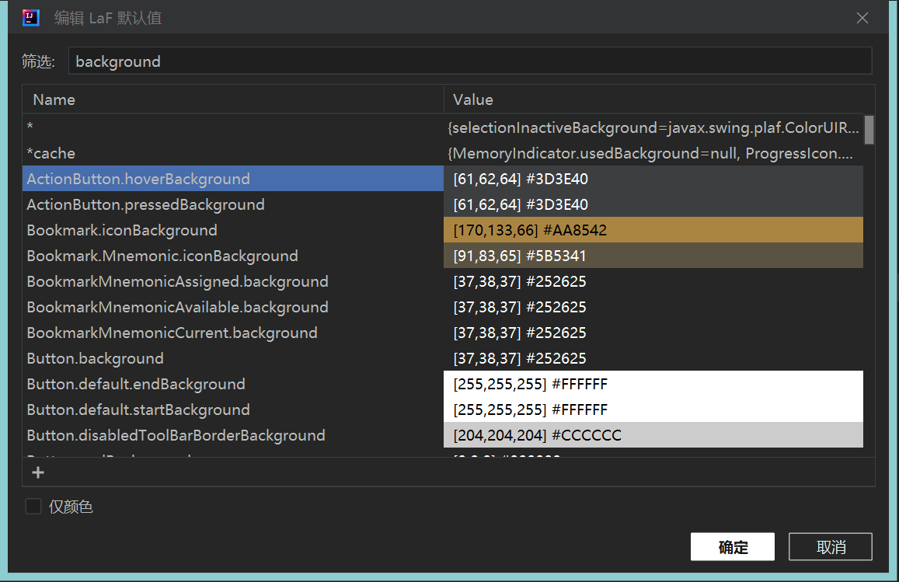

创建主题插件
主题插件是创建难度最小的插件, 可以不选择JDK(当然也可以和别的插件代码组合在一起).
创建插件
选择菜单 文件 | 新建 | 项目... , 选择 IDE 插件, 然后点击右侧 主题 即可完成创建.
{kind=link}
plugin.xml 内容简介
<!-- 插件配置文件. 读取 https://plugins.jetbrains.com/docs/intellij/plugin-configuration-file.html -->
<idea-plugin>
<!-- 插件唯一ID, 发不同版本时不能修改. 建议用com.xxx.xxx格式 -->
<id>jb_demo_theme</id>
<!-- 版本号: 主版本号.次版本号.修订号 https://semver.org/lang/zh-CN/ -->
<version>1.0.0</version>
<!-- 插件名字必须用英文且不能有标点, 可有空格和数字如 My Notes, 不能包含 plugin 字样.
详细解释: https://plugins.jetbrains.com/docs/marketplace/plugin-overview-page.html#plugin-name -->
<name>Jb_demo_theme</name>
<!-- 类别 -->
<category>UI</category>
<!-- 插件页显示的供应商名称, 邮件和网址. -->
<vendor email="support@yourcompany.com" url="https://www.yourcompany.com">YourCompany</vendor>
<!-- 兼容的IDEA版本范围, 发版前请务必测试 -->
<idea-version since-build="213" until-build="223.*"/>
<!-- 插件网页和开发工具中的插件描述内容, 只能用简单HTML标记(文本格式, 段落和列表), 不支持CSS和JS, 不支持iframe.
必须要有简短的英文描述, 之后可以放中文, 否则会审核不通过.
完整内容: https://plugins.jetbrains.com/docs/marketplace/plugin-overview-page.html#plugin-description -->
<description><![CDATA[
Enter short description for your theme here.<br>
<em>most HTML tags may be used</em>
]]></description>
<!-- 更改备注, 建议每个版本更新, 支持中英文 -->
<change-notes><![CDATA[
Initial release of the theme.
]]></change-notes>
<!-- 产品和插件依赖兼容(这部分比较复杂).
Read more: https://plugins.jetbrains.com/docs/intellij/plugin-compatibility.html -->
<depends>com.intellij.modules.platform</depends>
<!-- 扩展列表 -->
<extensions defaultExtensionNs="com.intellij">
<!-- 主题提供者, ID需要唯一 -->
<themeProvider id="jb_demo_theme" path="/theme/jb_demo_theme.theme.json"/>
</extensions>
</idea-plugin>
主题的实时调试
打开文件 *.theme.json, 即可实时修改并运行预览效果.
打包主题
选择菜单 构建 | 为部署准备插件模块 'xxxx' , 即可打包完成产生jar文件.
测试主题
本地安装后测试效果.
发布主题
打开插件网站 https://plugins.jetbrains.com/, 点击 Sign In 后上传.
如果没有账号, 参考下列步骤注册:
等待审核通过即可
技巧
LaF Defaults (主题默认设置) 提供一种查找 UI 组件的键值对的方法, 以及修改 UI组件原型的能力(可直接修改颜色查看效果)
 代码自动补齐
{kind=link}

Last modified: 28 九月 2022